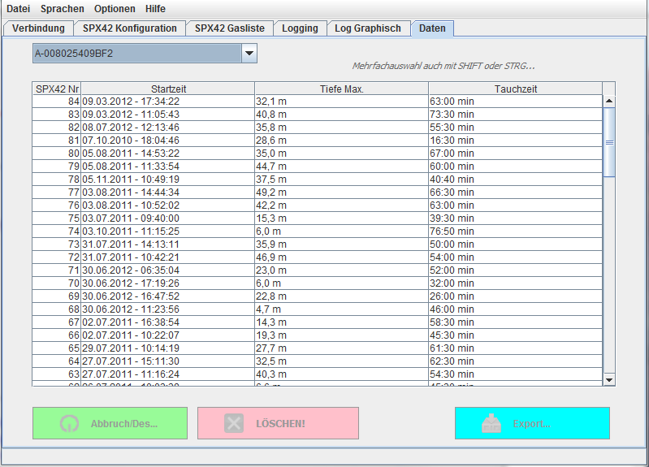

Der Dateimanager gibt zum Einen Übersicht über die in der Datenbank vorhandenen
Daten und erlaubt andererseits ein löschen von
unerwünschten Daten bzw einen Export von Daten für eine
weitere Verwendung.

Dateimanager für Logdaten
Die Anzeige der Daten erfolgt wieder getrennt nach Geräten. Die Auswahl des
Gerätes für die Anzeige der Daten erfolgt analog zur grafischen Loganzeige
über das Auswahklfeld links oben:
Manchmal sind unerwünschte Daten in der Datenbank gespeichert. Dazu gehören
zum Beispiel während der Wartung oder Reparatur eines Gerätes durchgeführte
Druckkammertauchgänge.
Um diese wieder aus der Datenbank (NICHT aus dem SPX42!) zu entfernen kann der
Dateimanager genutzt werden.
Werden Einträge selektiert, werden gleichzeitig die Buttons im unteren Teil
des Programmfensters freigegeben:
Einträge ausgewählt, Buttons freigegeben
Ein Druck auf den Button "Abbruch/Des..." entfernt die Markierungen und
sperrt die Buttons wieder.
Wenn die markierten Datensätze aus der internen Datenbank gelöscht werden sollen,
wird dies durch einen Klick auf den Button mit der Aufschrift "LÖSCHEN!"
ausgelöst.
Zur Sicherheit fragt das Programm noch einmal mit einer Dialogbox: "Sind Sie
sicher?". Nach einem Klick auf "LÖSCHEN!" erfolgt die Löschung der ausgewählten
Daten ohne Widerruf.
zum Inhalt
Momentan wird der Export in das UDDF-Format unterstützt,. Das UDDF-Format ist
ein universelles Datenformat für den Austausch von tauchrelevantern Daten und
ist eine Anwendung des XML-Standart. Es handelt sich also um nach strengen
aber einfachen Regeln formatieren Text.
Wird nach dem markieren der zu exportierenden Daten der Button "Export..."
angeklickt, wenden die gewählten Daten unmittelbar in das in den
Einstellungen ausgewählte Verzeichnis
exportiert.
In der Grundeinstellung des Programmes ist das das Verzeichnis "export" im
Ordner, in dem die Programmdatei installiert wurde.
Die Datei hat als namen die Nummer des Gerätes und einer zusammengestellten
Bezeichnung wie dem Datum und dem Zeitpunkt des Tauchganges. Die Endung
lautet ".uddf"
Ein Anwendungsfall (vom Autor bevorzugt) ist das Führen eines persönlichen
Logs mittels der Software
( "Diving Log" von Sven Koch )